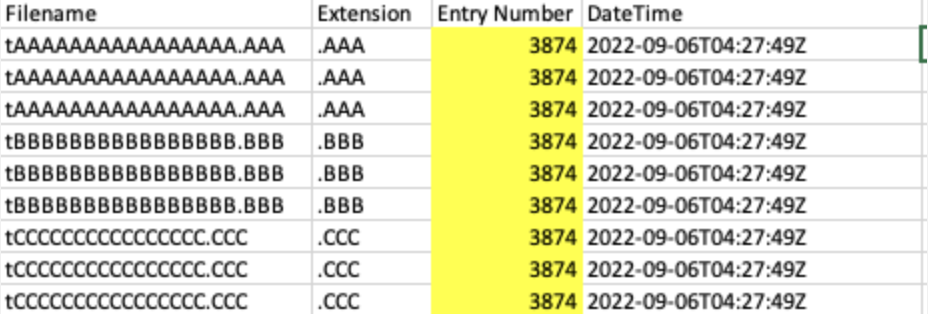

This article is an overview of possible anti-forensics.
Timestomping
On NTFS, discrepancies between $STANDARD_INFORMATION and one or two $FILE_NAME attributes’ MACB timestamps could indicate timestomping.
🤔 How to detect timestomping techniques?
$FILE_NAME ⏰ vs $STANDARD_INFORMATION ⏰. Can be detected with 🛠️ mftecmf, 🛠️ fls, 🛠️ istat and 🛠️ FTK imager.
NTFS timestamps are very precise and have fractional seconds as well. Typically, you’d expect them to be something other than all zeroes. 🛠️ mftecmf and 🛠️ istat.
If 🏺 ShimCache timestamp > $STANDARD_INFORMATION modified timestamp. 🛠️ mftecmf, 🛠️ fls, 🛠️ istat and 🛠️ FTK imager for the $STANDARD_INFORMATION and 🛠️ ShimCacheParser.py or 🛠️ AppCompatCacheParser.py.
Check if compile time ⏰ > $STANDARD_INFORMATION. 🛠️ sigcheck and 🛠️ ExifTool.
Check $I30 as well.
Check MFT for records with the similar entry numbers.
File Delete/Wiping
🛠️ sdelete (more about the forensic footprint of the tool here). Wipes files, directories and free space. This is what this tool’s activity looks like:

As you can see, files are renamed with a peculiar pattern first. Each new file is renamed to the subsequent letter so that the first file is renamed with As, the second with Bs etc.
🛠️ bcwipe 💰 (commercial). Clears $I30 slack and MFT records. Renames files once with a random name equal in size to the original. Check $UsnJrnl, $LogFile, and 🏺 execution artefacts. 📂 C:\ProgramData\Microsoft\Search\Data\Applications\Windows\GatherLogs\SystemIndex contains 🏺 .gthr gather log that’s used to index files for better search performance (used by Windows Search index). Windows Search index uses $UsrJrnl to track changes made to the system. Even when files were deleted and wiped, .gthr log, $UsrJrnl, $I30 can be used to confirm, at least, that the file existed and even recover some data from it. Also, 🏺 Prefetch file for sdelete or any other wiping tool could indicate that some wiping occurred.
🛠️ Eraser (open-source). Renamed MFT records (with ADS, if present), $130 slack, $UsnJrnl, $LogFile, and “Evidence of Execution” artefacts persist
🛠️ Cipher (built-in on Windows). Includes a feature to overwrite free space (not individual files). ❗️Creates a persistent directory named EFSTMPWP at the volume root and adds temp files to fill free space. Also, LOL.bin is sometimes used for cleanup.
📘 cipher.exe /w:<drive>
🛠️ CCleaner
For Windows Registry recovery, use 🛠️ Registry Explorer. It can process unallocated space for deleted keys. It can also spot anomalies to spot fileless malware hiding the registry. It can detect both large values and base64 encoded strings.
One can also use carving to look for specific data across various artefacts. It’s useful when the metadata is reused and no longer exists for the file.
📘 icat -r image inode # recover with metadata method
📘 tsk_recover image outputdir
# Carving methods
📘 photorec # win, lin, mac, 300+ file signatures. Uses metadata from the carved files.
📘
You can also utilise Volume Shadow Copies to restore deleted files. 🛠️ vss_carver.py can be used for that.
📘 vss_carver -t RAW -i /nrnt/ewf_mount/ewf1 -o 0 -c -/vsscarve-basefile/catalog -s -/vsscarve-basefile/store
📘 vss_catalog_manipulator list -/vsscarve-basefile/catalog
📘 vshadoranount -o 0 -c -/vsscarve-basefile/catalog -s -/vsscarve-basefile/store
📘 cd /mnt/vsscarveJaasefile/ _
📘 for i in vss*; do rrountwin $i /mnt/shadowcarve basefile/$i; done
Yet another way to recover files is to use 🛠️ bulk_extractor-rec to carve for Event logs.
evtx-EVTXfile andEVTXchunks (with generated file header)ntfsindx-INDXrecords ofSINDEXALLOCATIONattributentfslogfile- RSTR/RCRD records of SLogFilentfsmft-FILErecords of$MFTntfsusn-USNRECORDstructure of$UsnJml:$Jutmp-utmpstructure records
📘 blkls [options] image > image.unallocated
The last carving resort - strings, bstrings (Windows) and grep.
Encryption
Fileless Malware
Malware of that type is still not 100% fileless. What it means is that the main code is not written to disk, but the loader still needs to be present on the disk. most often it’s a PowerShell script or WMI on Windows machines.
Registry/Config
Keys can be deleted or wiped. Also, the registry might be utilised to hide scripts.
Logs Tampering and Deletion
With Event logs on Windows, one can even insert bogus events using the WinAPI.